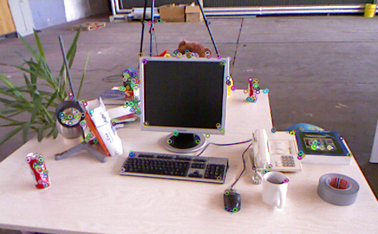
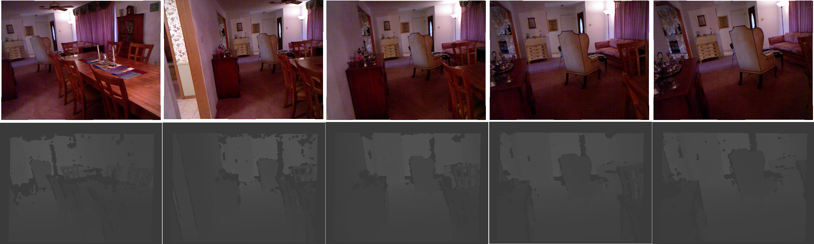

Scheduling Optimization with Visual References
in Multi-AGV Coordination
Haocheng Zhao
Introduction
Background
Traditional methods:- black tapes,
- magnetic tapes,
- QR code,
- …
New Methods:- radar,
- visual,
- deep learning,
- …
Objective
This project aimed to build a prototype of AGV, consisting visual and radar reference, and to achieve a series of tasks with other AGV.
Visual Simultaneous Localization and Mapping
Structure of VSLAM
- Visual Odometry
- Optimization
- Loop Closure
- Mapping
Type of camera
monocular

stereo

RGB-D

Depth Image

ORB-SLAM (Oriented Fast and Rotated Brief)
- feature-based SLAM system.
- support monocular, stereo and RGBD camera.
- use ORB feature.
- Fast feature to find the features.
- BRIEF descriptor to store the pixel around the features.
have three parallel thread: tracking, local mapping and loop closing.

ORB Feature


Example Results

April-tag

This Final Master Project
Project Design
Hardware:- Personal Laptop for VSLAM system.
- Cars from team.
- Camera: MYNT s1040 Stereo.
Software:- Base: ORB-SLAM2.
- Other: apply the radar to the system.
Project Design
Task:- Use the
MainAGV map the lab room. - Ask the
MainFrom one point to another. - The
SecondAGV use april-tag follow theMainAGV.
- Use the